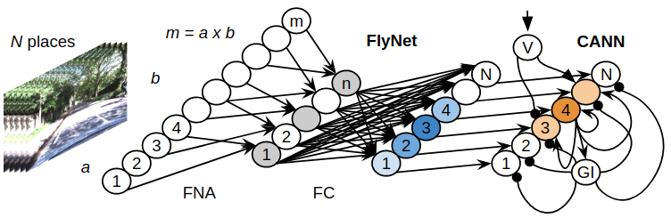

Marvin Chancán
Robotics Ph.D. candidate
School of Electrical Engineering and Robotics, QUTEmail: mchancanl@uni.pe

Marvin ChancánRobotics Ph.D. candidateSchool of Electrical Engineering and Robotics, QUTEmail: mchancanl@uni.pe |
|

|
MVP: Unified Motion and Visual Self-Supervised Learning for Large-Scale Robotic Navigation M. Chancán, M. Milford ArXiv Preprint 2020 (under review at IROS 2020) [Project page] [Paper] |

|
CityLearn: Diverse Real-World Environments for Sample-Efficient Navigation Policy Learning M. Chancán, M. Milford IEEE International Conference on Robotics and Automation (ICRA), 2020 [Project page] [Video] |
|  | A Hybrid Compact Neural Architecture for Visual Place Recognition M. Chancán, L. Hernandez-Nunez, A. Narendra, A. Barron, M. Milford IEEE Robotics and Automation Letters (RA-L), 2020 (Oral presentation at ICRA 2020) [Project page] [IEEE Xplore®] |
|
|
NeuroSLAM: A Brain Inspired SLAM System for 3D Environments
F. Yu, M. Chancán, J. Shang, Y. Hu, M. Milford 2019 International Collegiate Competition for Brain-inspired Computing (ICCBC), Tsinghua University, Beijing, China [Project page] [Poster] |
|

|